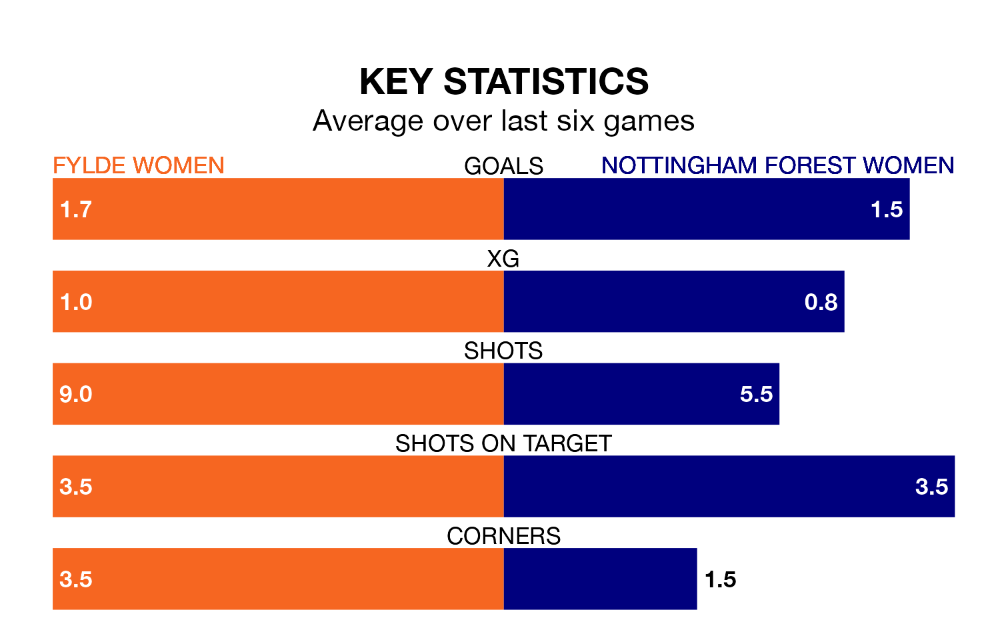

Mid-season relegation candidates Fylde Women face a challenge against high-flying Nottingham Forest Women on Sunday.
Fylde Women are rooted to the bottom of the Women's National League Premier Division – North table, and have picked up no wins and three draws in their 12 games to date.
Nottingham Forest, meanwhile, are third in the standings with 23 points, having won seven and drawn two, and are seven points behind table-toppers Newcastle United W.
With 31 goals in 12 games so far this season, Nottingham Forest are the league's second-highest scorers with 2.6 goals per game. And they are conceding fewer than average, letting in 11 goals at a rate of 0.9 per game.
Fylde, meanwhile, are below average scorers, with 1.1 goals per game, compared to a league average of 1.8. They have conceded 3.7 goals per game.
The home team are in bad form in Women's National League Premier Division North, with no wins and three draws from their last six games.
With three wins and two draws over that period, the visitors' form is much better – they have taken 11 points from 18, compared to Fylde's three.
In the last five years, Fylde and Nottingham Forest have played each other on five occasions. Fylde won one of them and Nottingham Forest the other.
On average, Fylde scored 0.8 goals and Nottingham Forest 3.8 in those matches.
Their last meeting was on September 10, when Nottingham Forest won 3-1 at home.
Fylde's last match was on January 7, a 2-1 loss against Stourbridge Women.
Nottingham Forest beat Burnley Women 2-1 last time out, on January 28.
Updated: 14:12 (UTC), 02/02/24